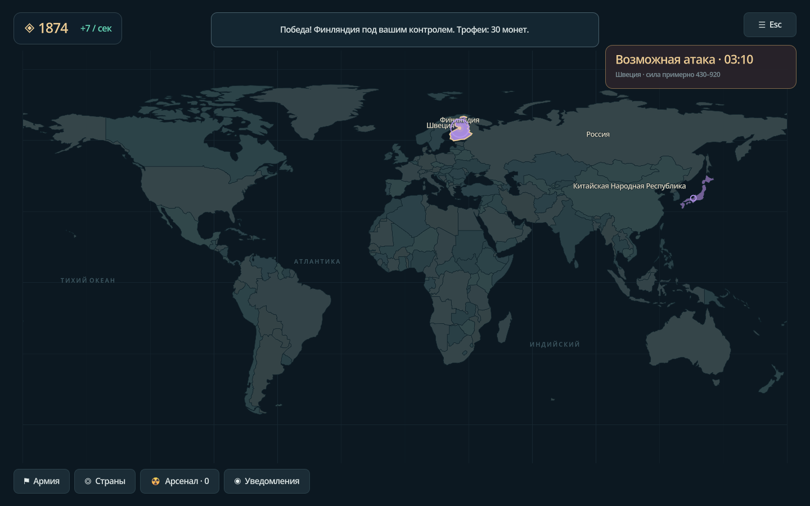
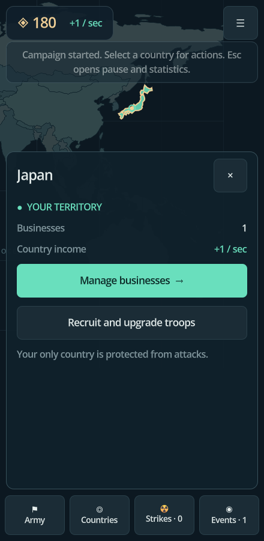
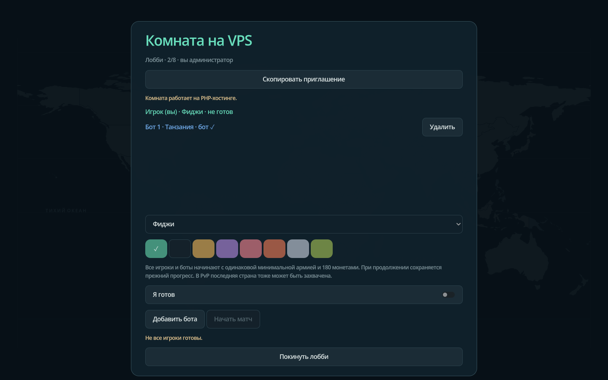

Создайте преимущество
Улучшайте предприятия, чтобы оплачивать новые операции. Нанимайте пехоту, авиацию и флот. Технологии увеличивают силу каждого бойца.
СТРАТЕГИЯ С ОТКРЫТЫМ ИСХОДНЫМ КОДОМ
Развивайте экономику. Разведывайте силы соперников. Выбирайте момент для удара. Нативная стратегия для Windows и Android: одному или с друзьями на своём сервере.

01 / STRATEGY
Улучшайте предприятия, чтобы оплачивать новые операции. Нанимайте пехоту, авиацию и флот. Технологии увеличивают силу каждого бойца.
Отправьте шпиона за снимком армии. Оцените цену морской операции. Предупреждение об атаке может оказаться слухом — информация решает.
Наблюдайте за движением операций и результатами боёв. Десять первых захватов дают ядерный заряд. Удерживайте территории и расширяйте державу.
02 / NATIVE
Касайтесь, двигайте и масштабируйте карту на Android. Играйте на большом экране ПК. Портретный и альбомный режимы, русский и английский, сохранения и звуки.
armeabi-v7a · arm64-v8a
x86 · x86_64

03 / MULTIPLAYER
До 176 людей и ботов в одной комнате. Сервер рассчитывает игру и хранит партии. Игроки Windows и Android используют одинаковые протоколы.

Создайте комнату на игровом клиенте. Найдите её в локальной сети или подключитесь по адресу.
Как развернуть ↗Сервер Linux с Docker Compose и HTTPS через Caddy. Несколько независимых комнат.
Как развернуть ↗Обычный PHP-хостинг версии 8.1+ и cron. Без базы данных и постоянно работающего игрового процесса.
Как развернуть ↗04 / FIELD GUIDE
От первой страны до собственного сервера. Правила, сборка и исходный код доступны каждому.
Скачайте нативный клиент или создайте свою версию ATLAS.
Исходники 0.2.0 ↗Ранняя версия 0.2.0 · Android 7.0+ / OpenGL ES 3.0. Библиотеки четырёх ABI и подпись APK проверены; физические Android-устройства и нагрузка на production-хостинг требуют проверки.